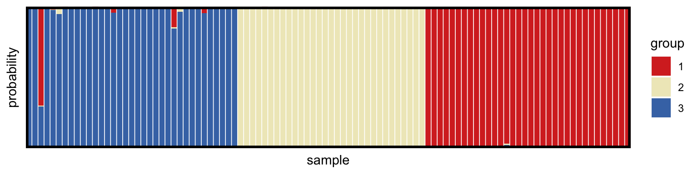

More realistic models
Bob Verity
2018-09-26
complex-priors.RmdThis vignette demonstrates the use of more complex priors, which can add realism to the model but also tend to slow down the MCMC. It covers:
- Different types of prior on COI
- More realistic priors on allele frequencies
- Dealing with missing data and estimating error rates
This vignette follows on from the previous tutorial - or you can pick up here by running these lines of code:
# load output of previous tutorial
mysim <- malecot_file("tutorial1_mysim.rds")
myproj <- malecot_file("tutorial1_myproj.rds")More realistic priors on COI
In the previous tutorial we assumed a uniform prior on COI. This tends to be too permissive for real data as it gives considerable weight to high COIs and can therefore lead to over-estimation. There are two alternative priors implemented in MALECOT - the Poisson distribution and the negative binomial distribution.
The Poisson distribution assumes that COIs are clustered around a mean value. It is what we would expect if all individuals in the population were becoming infected and clearing infections at the same constant rate. The negative binomial distribution can be thought of as an over-dispersed form of Poisson distribution, i.e. it allows for a greater spread of values around the mean. It more closely reflects a situation where there is heterogeneity in exposure, meaning some individuals tend to be heavily infected while some are only lightly infected. We can use the parameter COI_dispersion to set the level of over-dispersion - for example, a value of 2 means the prior variance will be twice as large as the prior mean. Note that whatever prior we choose, COIs will still be truncated at COI_max.
We can explore different shapes of prior using the plot_prior_COI() function:
plot_prior_COI(COI_model = "uniform")plot_prior_COI(COI_model = "poisson", COI_mean = 3)plot_prior_COI(COI_model = "nb", COI_mean = 3, COI_dispersion = 2)The simulated data in the previous tutorial were generated from a Poisson distribution, and so we could use this prior to exactly match the inference model to the simulated data. However, in reality we will not have the luxury of knowing the true COI distribution, and so for this example we will use a negative binomial prior. Rather than using a set value for the prior mean we will use the argument estimate_COI_mean = TRUE to tell the model that we want to estimate the mean COI for each subpopulation.
In some cases we may want to specify the COI of certain samples manually - for example if we have already used other programs to estimate the COI and we want to insert these values. This can be accommodated using the COI_manual argument, which takes a vector of length equal to the number of samples. Values of -1 indicate that the COI should be estimated, while positive values indicate that the COI should be fixed at that value. In this example we will assume that we know the true COIs of the last 10 samples.
# define some COIs manually
known_COI <- rep(-1,100)
known_COI[91:100] <- mysim$true_m[91:100]
# create new parameter set
myproj <- new_set(myproj, name = "nb model", COI_model = "nb", COI_max = 20,
COI_manual = known_COI, estimate_COI_mean = TRUE, COI_dispersion = 2)
myproj## DATA:
## data format = biallelic
## samples = 100
## loci = 24
## pops = 3
## missing data = 0 of 2400 gene copies (0%)
##
## PARAMETER SETS:
## SET1: uniform model
## * SET2: nb model
##
## ACTIVE SET: SET2
## lambda = 1
## COI model = nb
## COI max = 20
## COI specified manually for 10 samples
## estimate COI mean = TRUE
## COI dispersion = 2
## estimate error = FALSE
## e1 = 0
## e2 = 0We will keep things simple here by only running the MCMC for \(K = 3\):
# run MCMC
myproj <- run_mcmc(myproj, K = 3, burnin = 1e4, converge_test = 1e2,
samples = 1e4, pb_markdown = TRUE)## Running MCMC for K = 3
## Burn-in phase
##
|
|=================================================================| 100%
## converged within 100 iterations
## 3.41798 2.01049 2.0683 2.69213 2.42659 2.91708 3.96894 2.00287 2.40639 2.37312 1.57719 2.80229 1.75943 2.26298 3.35931 2.9944 3.22408 2.71194 3.18163 2.8937 3.10306 2.64969 3.29561 2.46973 2.37939 1.70308 2.3564 2.76966 3.1011 2.88147 2.47295 1.9549 1.43411 2.89764 2.64085 4.11611 3.75117 3.15671 4.0679 2.33234 3.73506 1.72637 2.23605 1.77137 4.69799 3.61291 3.27988 2.67787 2.00341 4.65677 5.37551 3.64929 2.02236 1.94297 2.44551 3.10718 2.76676 2.65623 2.86689 2.56253 2.85876 3.49519 4.08991 3.81948 3.05242 2.45356 2.25677 1.85695 4.98484 3.58715 4.22299 2.41815 3.54143 3.52937 4.32274 4.32987 4.23973 3.19526 3.74453 3.33414 5.01115 3.87198 5.23976 1.97174 5.66922 3.51582 2.25038 2.47722 3.88014 3.55969 2 2 2 2 2 2 2 2 2 2
## Sampling phase
##
|
|=================================================================| 100%
## completed in 3.2339 seconds
##
## Processing results## Total run-time: 3.91 secondsAs before, we need to check that we are happy with the behaviour of our MCMC by looking at trace plots and other diagnostics. Assuming everything looks OK, we can go ahead and produce the posterior allocation and and posterior COI plots:
# structure plot
plot_structure(myproj, K = 3, divide_ind_on = TRUE)
# load ggplot2 package
library(ggplot2)
# produce plot of posterior COIs
posterior_COI <- plot_COI(myproj, K = 3)
# overlay true COI values
posterior_COI <- posterior_COI + geom_point(aes(x = 1:100, y = mysim$true_m), col = "red", shape = 4)
posterior_COI
Notice that the 95% credible intervals in the COI plot are tighter than the equivalent plot of the previous tutorial. This is because our prior now assumes that COIs are clustered around a mean value. Notice also that the final ten samples have their COI fixed at the correct value due to our use of the COI_manual argument.
Next we can look at the estimated mean COI for each of the subpopulations:
plot_COI_mean(myproj, K = 3)
Recall that the data were simulated from three subpopulations with true mean COIs of 1.2, 2, and 3 respectively. The model appears to have estimated the correct values, but in the wrong order. The seemingly incorrect order of these estimates goes back to the issue of labelling subpopulations mentioned in the previous tutorial. When lined up against the three groups in the structure plot above (which go group3 then group2 then group1) we can see that mean COI estimates do in fact go from lowest on the left to highest on the right. We can also specify the deme order in this plot using the deme_order argument:
plot_COI_mean(myproj, K = 3, deme_order = c(3,2,1))More realistic priors on allele frequencies
The distribution of allele frequencies can be an important factor in determining how much signal there is in the data. If allele frequencies have a narrow range then even subpopulations that are evolutionarily well separated might look similar, and so it becomes difficult to detect population structure. Similarly, if our model expects subpopulations to have very different allele frequencies then it might ignore more subtle differences, tending instead to lump subpopulations together.
MALECOT assumes a beta prior on allele frequencies with shape parameter lambda. We have three options when specifying lambda:
lambdacan be a single value. In this case the same shape parameter is used for all alleles and all loci, making the prior symmetric and identical over all loci.lambdacan be a vector of shape parameters - one for each allele. In this case the prior will usually be asymmetric and skewed in favour of one allele. The same prior is still applied over all loci, meaning this option can only be used if there are the same number of alleles at every locus (this is always true for bi-allelic data).lambdacan be a list with as many elements as there are loci, and each element consisting of a vector with as many elements as there are alleles at that locus. This makes it possible to specify a different prior at every locus.
By default, lambda is defined using the first method with a value of 1. This places equal weight on every allele frequency in the interval \([0,1]\) at every locus, i.e. the Beta distribution simplifies to the uniform distribution. We can visualise different priors using the plot_prior_p() function:
# (the default prior)
plot_prior_p(lambda = 1)plot_prior_p(lambda = 0.5)plot_prior_p(lambda = c(7,1))We will use the last of these distributions, which makes it more likely a priori that the reference allele will be common and the alternative allele will be rare. We can simulate some new data under this prior and load it into a new project:
# simulate new data with skewed allele frequency distribution
mysim_skew <- sim_data(n = 100, L = 24, K = 3, lambda = c(7,1))
# bind data to new project
myproj_skew <- malecot_project()
myproj_skew <- bind_data_biallelic(myproj_skew, df = mysim_skew$data, ID_col = 1, pop_col = 2)Next we need a parameter set. When defining the prior on allele frequencies we will use the same skewed distribution that we used when generating the data. We then run the MCMC as normal:
# define parameter set with skewed prior
myproj_skew <- new_set(myproj_skew, name = "skew allele freqs", COI_model = "poisson",
COI_max = 20, estimate_COI_mean = TRUE, lambda = c(7,1))
# run the MCMC
myproj_skew <- run_mcmc(myproj_skew, K = 3, burnin = 1e4, converge_test = 1e2,
samples = 1e4, pb_markdown = TRUE)## Running MCMC for K = 3
## Burn-in phase
##
|
|=================================================================| 100%
## converged within 100 iterations
## 4.04727 5.73336 3.8457 5.19779 5.40735 4.39847 5.3575 4.07457 3.19661 5.20825 4.71131 5.22818 4.58218 4.89539 4.06163 4.08152 4.78489 4.66565 5.00567 2.75655 6.05073 5.49495 4.93046 4.75443 5.27722 5.05412 5.49195 2.80463 4.38846 4.43364 2.47247 2.95856 3.1785 3.19704 2.47545 3.11763 3.34214 4.80614 4.34137 3.34733 3.49858 2.28481 4.96436 4.00105 3.88795 3.8085 3.88653 3.15548 2.75616 5.78835 4.27854 3.33755 1.8496 1.37458 4.32028 3.06848 2.97053 3.43244 3.48675 3.4332 4.28533 4.70759 4.23687 3.27518 2.03297 3.10332 4.63257 2.50267 3.14708 1.07345 4.95779 4.19181 4.81006 4.22887 3.57246 3.98826 3.94327 4.89667 5.47164 1.60332 6.45929 4.18556 2.06531 3.66127 4.94935 3.24859 2.97327 2.89518 4.87745 4.06143 4.31735 4.65096 2.9285 3.96937 2.6357 4.5265 5.11963 4.59203 4.51188 4.14147
## Sampling phase
##
|
|=================================================================| 100%
## completed in 2.12538 seconds
##
## Processing results## Total run-time: 2.51 secondsAfter checking that our MCMC has behaved as expected, we can look at the posterior allocation plot:
# structure plot
plot_structure(myproj_skew, K = 3, divide_ind_on = TRUE)
We can see that the model has struggled slightly to pull apart the population structure. This is due to there being less information in 24 loci with skewed allele frequencies than in 24 loci with evenly spread allele frequencies.
Plotting credible intervals of posterior allele frequencies and overlaying the true simulated values, as demonstrated in the previous tutorial, we see that the model has done a good job of estimating the allele frequencies:
# get group order
group_order_k3 <- get_group_order(myproj_skew, K = 3, target_group = mysim_skew$true_group)
# loop through subpopulations
for (i in 1:3) {
# produce plot of posterior allele frequencies for this subpopulation
posterior_p <- plot_p(myproj_skew, K = 3, deme = i)
# get true simulated allele frequencies for this subpopulation
sim_p <- mapply(function(x){x[group_order_k3[i],1]}, mysim_skew$true_p)
# overlay true allele frequencies onto plot
posterior_p <- posterior_p + geom_point(aes(x = 1:24, y = sim_p), col = "red", shape = 4)
print(posterior_p)
}If we had used a uniform prior then the posterior allele frequencies would have been slightly biased towards the middle, although the overall inferred population structure would probably have been similar.
Missing data and errors
Real data is rarely without errors. Often true homozygotes will be miscalled as heterozygotes (error 1), and true heterozygotes will be miscalled as homozygotes (error 2). The probabilities of these two types of error can be specified in MALECOT using the arguments e1 and e2. We can either use fixed values, or these error probabilities can be estimated by setting estimate_error = TRUE, in which case a uniform prior is assumed ranging from 0 to e1_max for e1, and 0 to e2_max for e2.
Let us simulate some new data containing errors to test the model in a more challenging setting. We will assume that artificial heterozygotes occur with probability 0.1, and artificial homozygotes with probability 0.05. We will also assume that 20% of the data is missing, and hence encoded as -9.
# simulate data
mysim_errors <- sim_data(n = 100, L = 24, K = 3, e1 = 0.1, e2 = 0.05, prop_missing = 0.2)
head(mysim_errors$data)## sample_ID pop locus1 locus2 locus3 locus4 locus5 locus6 locus7 locus8
## 1 samp001 1 1.0 1.0 1.0 1.0 0.5 0.5 0.0 0.5
## 2 samp002 1 1.0 1.0 1.0 0.5 0.5 0.5 0.5 0.0
## 3 samp003 1 0.5 1.0 0.5 1.0 -9.0 0.0 1.0 1.0
## 4 samp004 1 0.5 0.5 1.0 0.5 0.5 1.0 -9.0 0.5
## 5 samp005 1 1.0 0.5 -9.0 0.5 -9.0 1.0 0.5 0.0
## 6 samp006 1 1.0 0.5 1.0 0.5 0.5 0.5 0.5 -9.0
## locus9 locus10 locus11 locus12 locus13 locus14 locus15 locus16 locus17
## 1 0.5 1.0 0.0 0.5 1.0 0.0 -9 0.5 0.0
## 2 0.0 -9.0 -9.0 0.0 1.0 0.5 1 0.0 -9.0
## 3 0.0 0.5 -9.0 1.0 -9.0 0.0 1 0.0 0.0
## 4 0.5 0.5 0.5 0.5 0.5 0.5 1 -9.0 -9.0
## 5 0.5 1.0 0.5 0.5 0.5 -9.0 1 0.5 0.5
## 6 0.5 1.0 -9.0 -9.0 1.0 0.0 1 -9.0 0.0
## locus18 locus19 locus20 locus21 locus22 locus23 locus24
## 1 0.0 0.5 1.0 0 1.0 0.5 1.0
## 2 -9.0 -9.0 1.0 0 1.0 1.0 0.0
## 3 1.0 1.0 0.5 -9 1.0 1.0 0.0
## 4 0.5 0.5 0.5 0 -9.0 0.5 -9.0
## 5 0.0 0.0 0.5 -9 0.5 0.0 0.5
## 6 0.5 0.5 -9.0 0 0.5 -9.0 0.5Next we will create a new project and bind the new data:
# bind data to new project
myproj_errors <- malecot_project()
myproj_errors <- bind_data_biallelic(myproj_errors, mysim_errors$data, ID_col = 1, pop_col = 2)
myproj_errors## DATA:
## data format = biallelic
## samples = 100
## loci = 24
## pops = 3
## missing data = 480 of 2400 gene copies (20%)
##
## PARAMETER SETS:
## (none defined)Looking at this output we can see that the project has correctly registered 20% of the data as missing.
For the model, we will assume a maximum value of 0.2 for both e1 and e2. It is recommended to use sensible values for e1_max and e2_max, for example values of 1.0 are usually inappropriate as we (hopefully) do not expect all of our data to be mistakes! We then run the MCMC as usual:
# create new parameter set
myproj_errors <- new_set(myproj_errors, name = "error model", COI_model = "poisson",
COI_max = 20, estimate_COI_mean = TRUE,
estimate_error = TRUE, e1_max = 0.2, e2_max = 0.2)
# run the MCMC
myproj_errors <- run_mcmc(myproj_errors, K = 3, burnin = 1e4, converge_test = 1e2,
samples = 1e4, pb_markdown = TRUE)## Running MCMC for K = 3
## Burn-in phase
##
|
|=================================================================| 100%
## converged within 200 iterations
## 4.9292 4.08347 3.73598 7.32888 5.89465 6.65381 7.17359 6.77103 5.69031 5.96569 5.12659 6.50995 7.61517 2.707 5.80186 5.61322 6.29645 6.91396 3.43291 4.10677 6.15754 6.20569 5.90418 7.59957 6.78337 4.57179 5.75071 4.17896 6.12776 3.86638 3.98279 6.23394 5.64933 5.34227 5.38944 6.04426 7.17803 6.68859 7.0898 6.21662 2.8336 6.95164 6.90956 5.87884 4.49036 6.30962 6.70172 6.00838 3.64215 6.79314 6.39789 5.46336 6.45262 6.04493 6.46634 6.32683 4.57731 5.07119 6.31463 5.37016 6.34085 6.49255 5.66644 5.03082 4.3096 6.14043 3.93433 5.58535 6.27222 6.39412 5.61615 6.93386 5.27161 6.09138 7.55707 5.77747 3.34681 5.59465 4.82102 5.23326 5.14454 4.88617 5.73108 3.03002 5.17266 5.07034 6.33872 6.68072 4.42798 5.49019 6.94194 7.69288 5.42731 5.48768 2.75185 6.47272 7.42703 5.12319 4.44386 5.83171
## Sampling phase
##
|
|=================================================================| 100%
## completed in 3.52522 seconds
##
## Processing results## Total run-time: 3.89 secondsAfter checking the behaviour of our MCMC we can plot the posterior 95% credible intervals of e1 and e2:
plot_e(myproj_errors)## using K = 3 by defaultIn this example the model has been able to correctly infer the error rates of around 0.1 and 0.05 from the data. To help get an intuition as to how the model is able to do this, imagine a situation where every locus in a given sample is homozygous apart from one which is heterozygous. There are two possibilities here: 1) the heterozygous locus is due to that sample having COI of 2 and being homozygous everywhere else by chance, 2) the heterozygous call is an error and the sample actually has COI of 1. The probability of being homozygous at every other locus by chance may be very small if the allele frequencies are intermediate, in which case the weight of evidence is in favour of this one heterozygous call being an error. The MCMC considers all possibilities in proportion to their likelihood, and weighted by our prior beliefs, to arrive at the posterior distributions above.
The next tutorial explores how the analysis pipeline differs when using multi-allelic data.